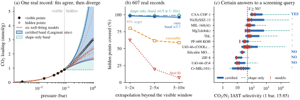
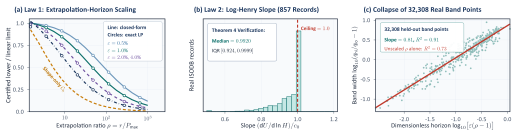

Scientific data management · Adsorption screening
What Do Tabulated Isotherms Certify?
Sharp Certain Answers to Mixture-Adsorption Screening Queries
Two isotherm tables can be fitted well by many models that disagree about the mixture. We compute what the tables themselves certify, and which measurement would settle the rest.
24 well-fitting model pairs: selectivity 217 to 2,018.
The tables alone certify 178 to 15,497. With the advised N₂ measurements: 421 to 2,810.
“Is S ≥ 300?” goes from undetermined to a certain yes.
From a screening question to a certain answer
Choose a mixture and a target, see which materials certainly pass, and find out what to measure when the tables cannot decide. These are screen recordings of the same workbench you can open below; it runs on real records.
- 1. Ask the questionPick the gas pair, pressure, composition and the selectivity you need.
- 2. Read the certain answersEach material is YES, NO or UNDETERMINED for every isotherm consistent with its tables.
- 3. Settle what is openInspect why a material is undetermined and which measurement would decide it.
Screen materials with certain answers

The workbench evaluates the paper's online stage in your browser: lookups in envelope tables that the Python package compiled from 411 NIST ISODB records. Answers are relative to IAST, the isotherm class, the tolerance and the Henry cap. To certify your own tables, use the Python interface below.
See how far one isotherm can be trusted

Find the measurement that settles a query
Plan a measurement · MP4 · GIF

Abstract
Mixture screening queries pure-gas isotherm databases via Ideal Adsorbed Solution Theory (IAST), fitting one model per record or comparing an ensemble of fitted families. In-window fits diverge at query pressures because IAST integrates spreading pressure from zero and evaluates the weaker gas beyond its window. Even a grid enumeration of dual-site Langmuir parameters within tolerance spans 96% of the certified selectivity width, while a six-family ensemble spans 26%. We formulate screening as certain-answer evaluation over nonparametric hinge and Langmuir-site Stieltjes classes under a tolerance and Henry cap. The exact certified interval reduces to two few-site envelopes per record, while our extrapolation-horizon and log-Henry laws bound certification beyond the window and without a cap. IsoCert compiles admitted records once with a continuum certificate and answers interval queries from tables in 0.15 ms (8118× faster than direct evaluation). Online, it evaluates a threshold predicate for YES, NO, or UNDETERMINED from four lookups and computes critical Henry caps and next-measurement advice by direct LPs. Across 13,183 ISODB isotherms and 1,930 pairs, certified bands cover 97.0% of held-out points (≤ 10 bar) and 96.5% at 5–10× extrapolation, where best-fit models stay within tolerance on 6.9%. Under synthetic in-class truth that respects the cap, IsoCert makes 0 false decisions across 1,592 certified answers.
Overview
Materials for gas separation are screened by pairing two pure-gas isotherm tables and solving IAST for the mixture selectivity. Practice fits one model per table. The mixture calculation, however, reads each isotherm outside its measured window: it integrates from zero pressure, and it evaluates the weaker gas at a pressure that exceeds the last measured point in 59% of the 1,930 real pairs we analysed. Models that agree on the window disagree there, so fit quality does not determine the answer.

We replace the single fit by the set of all isotherms consistent with a table and ask what holds for every member. A threshold query then has a certain answer: YES, NO, or UNDETERMINED, together with the exact interval of possible selectivities.
Method
A record with points (pi, qi) defines a class of site mixtures q(p) = ∫ φb(p) dν(b) with ν ≥ 0, |q(pi) − qi| ≤ ei and Henry constant at most H. Langmuir sites φb(p) = p/(1 + bp) give a class that contains multi-site Langmuir, UNILAN and Tóth isotherms; hinge sites give all concave nondecreasing isotherms. The spreading pressure Π(r) is linear in ν, so its upper and lower envelopes U(r), L(r) over the class are linear programs. Because the IAST root is monotone in the two spreading pressures, the extreme selectivities over both classes need only these per-record envelopes:
S⁺ = IAST(UA, LB), S⁻ = IAST(LA, UB).
The interval [S⁻, S⁺] is sharp, and its ends are attained by isotherms with at most n + 2 sites. Two laws bound what a table can certify. For a Henry-like table with tolerance ε, certification beyond the last pressure Pmax ends at a horizon of order Pmax/ε for any number of interior points. Under tolerance slack, the upper envelope grows logarithmically in the Henry cap, so a cap is needed and its influence is reported as a critical cap for each decision.
IsoCert computes each envelope by a column-generated linear program whose dual certificate holds for every site affinity, compiles a record once into outer-bound tables, and answers a threshold query from four table lookups. When a query is undetermined, a one-step lookahead ranks candidate measurements by the certified width they are predicted to leave.
Results
On 607 held-out records measured up to 10 bar, bands computed from the low-pressure tenth of each record cover 97.0% of 12,402 hidden points. The best-fit model stays within tolerance on 19.6%, and on 6.9% at 5–10× extrapolation. Keeping all dual-site Langmuir parameters within tolerance, instead of one fit, recovers most of this coverage (95.3%); the certified class adds the remaining points and a guarantee.
| Method | ρ ∈ (1, 2] | ρ ∈ (2, 5] | ρ ∈ (5, 10] | all ρ ∈ (1, 10] | ||||
|---|---|---|---|---|---|---|---|---|
| cov. | width | cov. | width | cov. | width | cov. | width | |
| Best-fit model (point) | 62.3 | – | 19.5 | – | 6.9 | – | 19.6 | – |
| Six-family ensemble | 80.1 | 1.05 | 61.6 | 1.20 | 58.8 | 1.57 | 63.0 | 1.24 |
| Dual-site parameter set | 97.4 | 1.27 | 95.6 | 1.97 | 94.5 | 3.61 | 95.3 | 2.43 |
| Hinge class (shape only) | 99.0 | 1.51 | 98.6 | 3.11 | 99.1 | 6.85 | 98.9 | 4.29 |
| Langmuir-site class (ours) | 98.3 | 1.27 | 97.3 | 2.00 | 96.5 | 3.68 | 97.0 | 2.51 |
| Langmuir-site class, records above 10 bar | 96.0 | 1.20 | 81.8 | 1.76 | 82.0 | 3.13 | 84.2 | 2.14 |
607 test records with Pmax ≤ 10 bar and 12,402 hidden points; last row: 464 records with Pmax > 10 bar and 7,512 hidden points, outside the validity range. A point counts as covered inside the band widened by the record's tolerance. Record-level bootstrap interval of the 97.0%: 95.5–98.3%. Curated data.

Across 1,930 real pairs and 12 gas combinations, the certified interval of ln S has median width 1.25, a factor of 3.5 in selectivity. A six-family ensemble spans 26% of that width, and its spread correlates with fit error at only 0.21 (Spearman); the dual-site parameter set spans a median 96%. On 990 synthetic instances with known truth, the interval contains the true selectivity in all 670 instances that respect the Henry cap, with 0 wrong among 1,592 certified decisions. Compiled tables answer an interval query in 0.15 ms and a threshold query in 25 µs.

Scope and limitations
Answers are certain relative to the binary IAST mixing rule, the stated isotherm class, the tolerance and the Henry cap; they are not prediction intervals for real mixtures. On 2,512 measured binary mixture points from 109 publications, the certified interval contains the measured selectivity for 60% at the default cap and 75% at a cap 100 times looser (a fit ensemble: 24%). Above 10 bar, held-out coverage of the Langmuir-site class drops to 84.2%. When the true Henry constant violates the cap, 4.8% of certified decisions fail. The dual-site parameter set is only 4% narrower than the certified interval, so most of the ambiguity is already present in ordinary two-site models; the certified class adds the outer guarantee. Closed-form measurement rules derived from the laws reach the target on 42% of acquisition instances against 68% for lookahead, which is a myopic heuristic. Certificates hold up to double-precision rounding; verified arithmetic is not used.
Implementation
The repository provides the Python package isocert (NumPy and SciPy, no GPU), examples, tests and the workbench source. A record needs only its pressures and loadings.
git clone https://github.com/OliverDOU776/What-Do-Tabulated-Isotherms-Certify-.git
cd What-Do-Tabulated-Isotherms-Certify-
python -m pip install .
python examples/quickstart.pyfrom isocert import Record, interval, decide
co2 = Record(p_co2, q_co2) # pressures (bar), loadings (mmol/g)
n2 = Record(p_n2, q_n2)
iv = interval(co2, n2, P=1.0, y=0.15) # certified [S-, S+]
print(iv.S_lo, iv.S_hi, decide(co2, n2, P=1.0, y=0.15, tau=50))BibTeX
@misc{wang2026isotherms,
title = {What Do Tabulated Isotherms Certify? Sharp Certain Answers to Mixture-Adsorption Screening Queries},
author = {Wang, Zijia and Hong, Haoliang and Li, Xuhui and Bai, Jingyang and Nie, Binjian},
year = {2026},
url = {https://github.com/OliverDOU776/What-Do-Tabulated-Isotherms-Certify-}
}